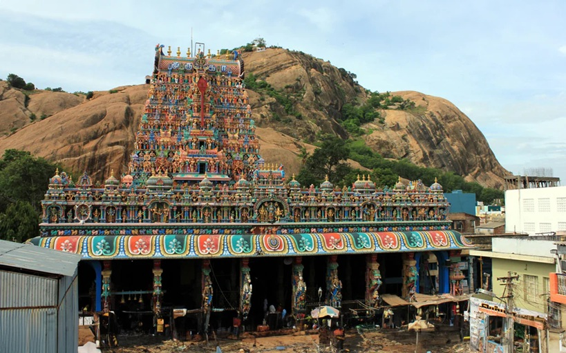
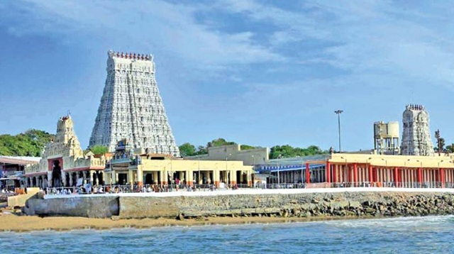
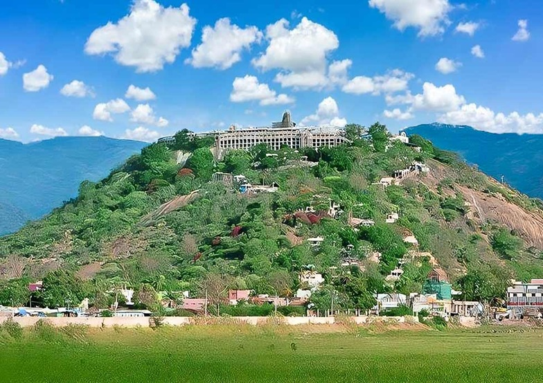
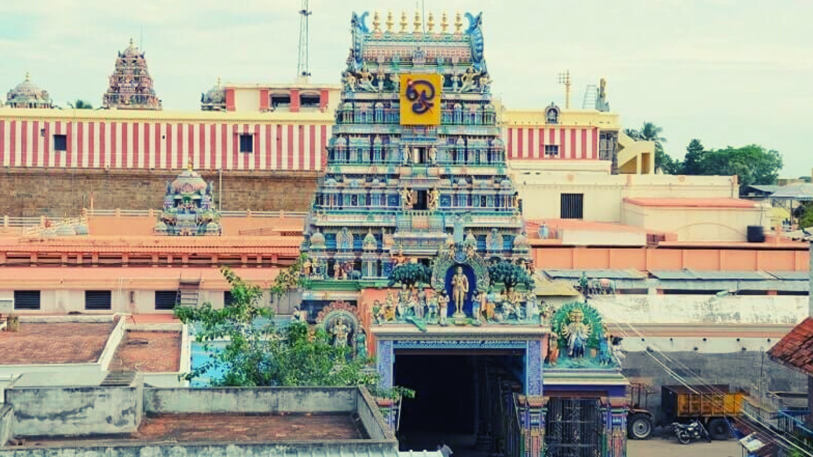
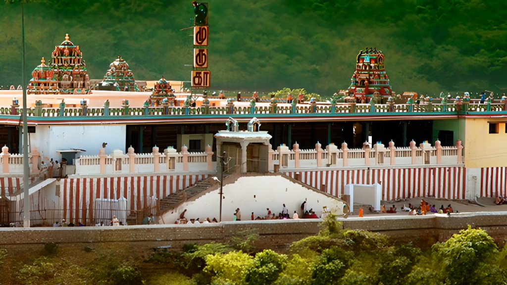
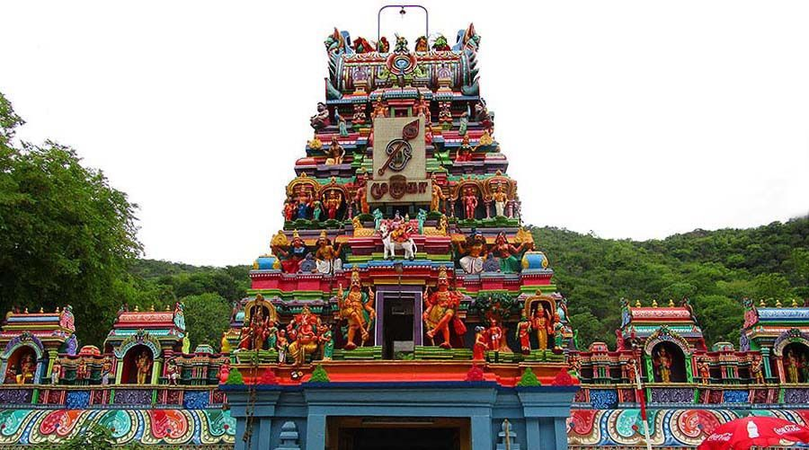

ஆறுபடை வீடுகள்
முருகனின் ஆறுபடை வீடுகள்
ஆறுபடை வீடு என்றால் என்ன?
தமிழ்நாட்டில் முருகப் பெருமானுக்கு உகந்த ஆறு தலங்கள் "ஆறுபடை வீடுகள்" என்று போற்றப்படுகின்றன. இந்த ஆறு தலங்களும் முருகனின் வாழ்க்கையின் வெவ்வேறு கட்டங்களையும், புராண வரலாறுகளையும் பிரதிபலிக்கின்றன. இவற்றை தரிசிப்பது மிகவும் புண்ணியமானது என்று தமிழ் மரபு கூறுகிறது.
1. திருப்பரங்குன்றம் — சுப்பிரமணியசுவாமி திருக்கோயில்
ஆறு தலங்களில் முதன்மையானது இது. சூரபத்மனை வதம் செய்த பின், இந்திரனின் மகளான தெய்வானையை முருகன் இங்கே திருமணம் செய்தான். மலையில் குடைந்து வடிக்கப்பட்ட கோயில் கட்டிடம் அதிசய கட்டிடக்கலையின் சான்று.

2. திருச்செந்தூர் — செந்தில் ஆண்டவன் திருக்கோயில்
கடல் அலைகளின் ஓசை கேட்கும் கரையில் அமைந்த இந்த தலம் சூரபத்மன் என்ற அரக்கனை வதம் செய்த இடம். பெரும் போரில் முருகன் தன் வேலால் சூரபத்மனை இரண்டாக வெட்டினான். ஒரு பகுதி மயிலாகவும், மறு பகுதி சேவலாகவும் ஆனது. தீமையை வென்ற வெற்றிவேல் இங்கு வணங்கப்படுகிறது.

3. பழனி — தண்டாயுதபாணி திருக்கோயில்
"தண்டாயுதபாணி" என்னும் திருவுருவில் முருகன் இங்கு வீற்றிருக்கிறான். சிவபெருமான் நாரதர் கொண்டுவந்த ஞானப்பழத்தை யாருக்கு வழங்குவது என்று கேட்கவே, கணபதி உலகை வலம் வந்து பழத்தை வென்றார். முருகன் மனம் வெதும்பி, ஆடை ஆபரணங்கள் அனைத்தையும் துறந்து, தண்டம் மட்டும் ஏந்தி பழனி மலை மீது தவமிருந்தான். இங்கு வரும் பக்தர்கள் வேண்டுவதெல்லாம் அளிப்பான் என்று நம்பப்படுகிறது.

4. சுவாமிமலை — சுவாமிநாத சுவாமி திருக்கோயில்
சிவபெருமானே ஓம் என்ற பிரணவ மந்திரத்தின் பொருள் என்ன என்று தெரியாமல் தவித்தார். அப்போது குழந்தையாகிய முருகன், தந்தையே! நீர் என்னிடம் சீடனாக வருவீரேல் உபதேசிப்பேன்! என்று கூறினான். அதனால் முருகன் "சுவாமிநாதன்" என்று அழைக்கப்படுகிறான்.

5. திருத்தணி — தணிகாசலநாதர் திருக்கோயில்
சூரசம்ஹாரத்திற்குப் பின் போரின் வெப்பம் தணியவும், மனம் அமைதி பெறவும் முருகன் இங்கு வந்து தங்கினான். அதனாலேயே இத்தலம் "தணி" எனப்பட்டது. இங்குதான் வேட்டுவர் குலத்தில் பிறந்த வள்ளியை முருகன் காதலித்து மணந்தான்.

6. பழமுதிர்ச்சோலை — கல்யாணசுந்தரர் திருக்கோயில்
மதுரைக்கு அருகே அமைந்த இந்த அழகிய மலைத்தலம் வள்ளியும் தெய்வானையும் உடன் வீற்றிருக்கும் திருத்தலம். இயற்கை எழில் நிரம்பிய காடுகளும் அருவிகளும் கொண்ட இந்த இடம் முருகனுக்கு மிகவும் பிரியமான வனமாக கருதப்படுகிறது.

ஆறுபடை வீடுகளின் சாரம்
- திருப்பரங்குன்றம் (மதுரை)முருகன் தெய்வானையை மணந்த தலம்.
- திருச்செந்தூர் (தூத்துக்குடி)சூரபத்மனை வதம் செய்த கடற்கரை தலம்.
- பழனி (திண்டுக்கல்)ஞானப்பழமாக முருகன் காட்சி தரும் மலைக் கோவில்.
- சுவாமிமலை (கும்பகோணம்)சிவபெருமானுக்கு பிரணவ மந்திரத்தை உபதேசித்த தலம்.
- திருத்தணி (திருவள்ளூர்)முருகப்பெருமான் கோபம் தணிந்து அருளிய தலம்.
- பழமுதிர்ச்சோலை (மதுரை)ஒளவையார் பாடியருளிய இயற்கை எழில் கொஞ்சும் தலம்.